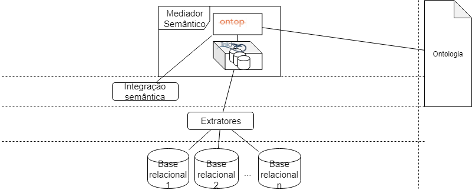

O Mediador Semântico (MS) é um sistema que permite que sejam realizadas consultas às fontes de dados através da Visão Ontológica definida pela integração semântica. A visão ontológica provê um único ponto de acesso aos dados, e permite que consultas sejam formuladas em termos da ontologia de domínio, de forma que o usuário não precisa entender das fontes de dados, nem das relações entre elas, e a resposta é recebida de forma inteligível.
A arquitetura do MS pode ser vista a seguir:

Ontop:Ontop é responsável por oferecer uma visão conceitual semântica dos dados integrados seguindo a ontologia de domínio. Ontop recebe uma consulta SPARQL sobre a ontologia de domínio e a traduz para uma consulta SQL sobre o esquema relacional global definido em Teiid. O processo de tradução da consulta é feito por meio dos mapeamentos das visões exportadas definidas na especificação da integração semântica. Além disso, Ontop é responsável por receber o resultado da consulta SQL retornada por Teiid e transformá-lo no formato solicitado pela consulta SPARQL.
Teiid:Teiid oferece uma abstração de banco relacional, oferecendo uma visão global unificada das múltiplas fontes relacionais como um único esquema. Teiid gerencia o processamento de consultas federadas, recebendo uma consulta SQL sobre seu esquema global e a traduz em múltiplas consultas SQLs sobre as múltiplas fontes originais.
Exemplos de Consulta
Para demostrar o fluxo seguido pelo MS no processamento de uma consulta, suponha que um usuário deseja obter informações sobre o parto das crianças que vieram a óbito com menos de 28 dias e tiveram asfixia ao nascer. Para responder essa requisição é necessário consultar a fonte de dados do SIM, para identificar as crianças que vieram a óbito com menos de 28 dias, e a fonte de dados do SINASC, para obter as informações sobre o parto dessas crianças. Além disso, é preciso explorar os axiomas da ontologia para inferir sobre “asfixia no parto”, uma vez que essa informação não está disponível de forma explícita nas fontes de dados. Os passos envolvidos no processamento de uma consulta são sumarizados a seguir:
O usuário define a consulta SPARQL Q sobre a ontologia de domínio da visão ontológica.
A consulta Q é traduzida em sub-consultas SQL definidas sobre o esquema das fontes de dados locais. A tradução é feita baseada nos mapeamentos entre as fontes de dados e a ontologia de domínio. Note que é necessário o uso de “mapeamentos completos”, o que significa que os axiomas, restrições de integridade, e as regras de ligação são todos compiladas nos mapeamentos.
As sub-consultas SQL são executadas pelo SGBD local.
O resultado das sub-consultas são integrados usando os links sameAs, e o resultado final é traduzido em RDF, de acordo com a consulta SPARQL.